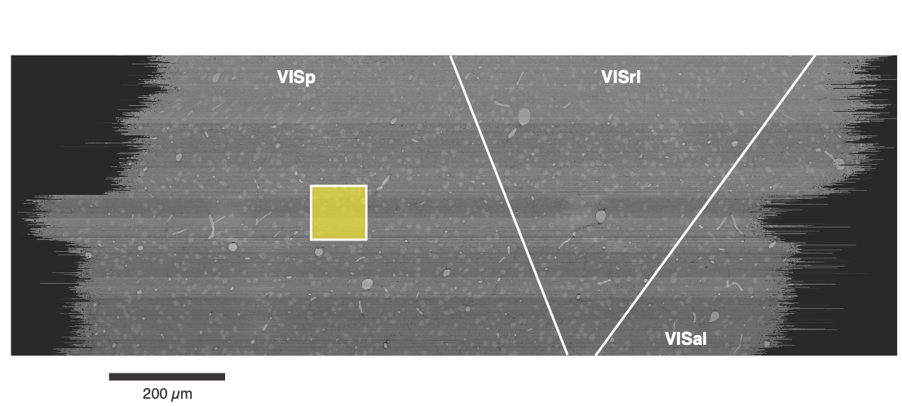

Proofreading and Data Quality#
Understanding this variablity in data quality is critical when analyzing the data. Automated segmentation of neuronal processes in dense EM imaging is challenging at the size of entire neurons, which can have millimeters of axons and dendrites. The automated segmentation algorithms used in the EM data for this project are not perfect, and so proofreading is necessary to correct errors in the segmentation. However, while automated proofreading methods are starting to appear, in general the proofreading process is time consuming and involves a lot of manual attention. Some cells in the MICrONs data are thus very well proofread, others are virtually untouched, and many are somewhere in between. Each kind of cell can be useful, but different approaches must be taken for each.
It is useful to distinguish between two kinds of proofreading errors: splits and merges. Split errors occur when a process incorrectly appears to stop in the segmentation, but actually could be continued. Merge errors occur when processes from two different neurons are incorrectly merged together. These two kinds of errors impact analysis differently. While split errors reduce the number of correct synaptic connections, merge errors add incorrect connections.
The frequency of errors is roughly related to the size of the process, and thus axons and dendrites have extremely different error profiles. Because they are thicker, dendrites are largely well-segmented, with only a few split errors and most merge errors being with small axons rather than other dendrites. Even without proofreading a neuron’s dendrites, we thus expect that most of the input synapses onto the dendrites are correct (since the vast majority of merge errors are with axons that only have output synapses), though some may be missing due to split errors at tips or missing dendritic spines. In contrast, axons, because they are thinner, have many more errors of both kinds. We thus do not trust axonal connectivity at all without additional proofreading.
Proofreading categories#
Proofreading is not an all-or-nothing process. Because of the reasons described above, we distinguish between the proofread status of the axon and the dendrite for each neuron separately. In addition, we consider three levels of proofreading:
Unproofread: The arbor (dendrite or axon) has not been comprehensively proofread, although edits may have happened here and there.
Clean: The arbor (dendrite or axon) has been comprehensively proofread to remove all merge errors, but may still have split errors. This means that the synapses that are there are correct, but incomplete.
Extended: The arbor (dendrite or axon) has been comprehensively proofread to remove all merge and split errors. This means that the synapses that are there are correct and as-complete-as-possible by expert proofreaders. Note that even a well-proofread neuron often has some tips that cannot be followed due to the limitations of the underlying imagery, and of course processes may leave the segmented volume.
The upshot is that unproofread axons are not of a quality suitable for analysis, you can trust the targets of a clean or extended axon because the default dendrite quality is good. However, if your analysis truly demands knowing if a particular neuron is connected to another neuron or not (rather than connecting to a population), the proofreading standards are particularly high and possibly require additional checks.
Pre Axon Status |
Post Dendrite Status |
Analyzabiity |
|---|---|---|
Unproofread |
Unproofread |
Not analyzable |
Unproofread |
Clean / Extended |
Not analyzable |
Clean |
Unproofread / Clean / Extended |
Analyzable but connectivity could be highly biased by limited axonal extent |
Extended |
Unproofread / Clean / Extended |
Analyzable and connectivity is close to complete |
Since a single proofread axon can have many hundreds to ten thousand synaptic outputs, the vast majority onto local dendrites, each single axon provides a tremendous amount of data about that cell’s postsynaptic targets. However, due to
Proofreading efforts#
There have been several different proofreading efforts in the MICrONS data with different goals and levels of comprehensiveness. Importantly, neurons were not selected for proofreading randomly, but rather chosen based on various criteria. A few of the most signifcant proofreading efforts are described below.
Excitatory neuron proofreading for functional connectomics. Excitatory neurons in retinotopically matched ares of VISp and RL were proofread to enable functional connectomics analysis, looking for the relationship between functional similarity and synaptic connectivity.
Martinotti cell proofreading. Extremely extensive reconstructions of several layer 5 Martinotti cells in VISp were performed to enable analysis of the relationship between morphology and transcriptomics.
Minnie Column. A 100 micron square area of VISp for a comprehensive census of its neuronal population across all layers. Originally, excitatory neurons in this column had dendritic cleaning and extension and inhibitory neurons had comprehensive cleaning and substantail but incomplete extension. However, this population has become a hub for proofreading and cell typing, and will be discussed further in the section below.
Proofreading tables#
To keep track of the state of proofreading, the table proofreading_status_public_release in the annotation database has a row for each proofread neuron and provides a summary of the proofreading status of the axon and dendrite.
For more details, look at the table documentation.
Minnie Column#

Fig. 13 Location of the Minnie column (yellow) within the dataset. Top view.#
The Minnie Column is a collection of more than 1,300 neurons whose nucleus centroid fell within a 100 x 100 micron square (viewed from the top) and extending across all layers. This was originally considered a region of interest for a comprehensive census of the neuronal population, and thus all neurons in this region were proofread to some extent and manually evaulated. All excitatory neurons had their dendrites cleaned and extended to assess dendritic morphology and synaptic inputs, while inhibitory neurons had both their dendrites cleaned and extended, and then their axons were extensively cleaned and extended to capture their targeting properties. Efforts were made to extend inhibitory axons to every major region of their arbor, but not every individual tip was followed and the resulting analysis focused on population-level connectivity rather than individual connections.
Morphological and connectivity-based cell typing was performed on these cells in terms of both classical and novel categories, and considerable expert attention ensured that the baseline data quality was high. Cell type results can be found in several of the cell type tables available. These cell types were used for training the various whole-dataset cell typing classifiers.
In addition, the proofreading and multiple levels of cell typing applied to this dense and diverse population has made it a useful reference, and spawned further analysis. Subsequent work has cleaned many of the excitatory axons from layers 2–5, albeit to a variety of degrees of extension.